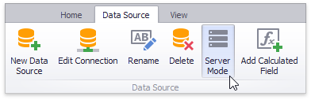

Data Processing Modes
DevExpress Dashboard supports two data processing modes that are used to perform data-related operations (such as grouping, filtering, etc.).
- In server mode, data-related operations are performed on the database server side. For instance, when you apply filtering to a dashboard item, the Dashboard Designer requests the required data automatically by sending a query containing a corresponding SELECT statement with the specified WHERE clause.
- In client mode, data-related operations are performed on the workstation side. In this mode, a compressed snapshot of aggregated data is loaded into a workstation memory. This reduces memory consumption and improves the speed of client-side data shaping operations using several techniques: data compression, various data grouping and multi-threading algorithms, etc.
Tip
Note that performance in server/client modes depends on multiple factors such as database structure, server workload, etc. To decide which mode to use, test both.
Note
In OLAP mode, data processing is performed using the server mode specified for the Analysis Services instance. To learn more, see Determine the Server Mode of an Analysis Services Instance.
Change Data Processing Mode
Different data source types allow you to manage the current data processing mode in different ways.
For SQL data sources, you can switch between data processing modes manually. To enable or disable server mode for the selected data source, use the Server Mode button located on the Data Source ribbon tab.

Server mode is supported for the SQL data sources created using the Data Source wizard and supplied with data using the Query Builder.
Excel Data Source supports client mode only.
Extract Data Source works in client mode.
Server Mode Limitations
In server mode, the Dashboard does not have simultaneous access to bound data in its entirety. This imposes some limitations.
- Stored procedures are not supported in server mode.
- Stored procedures executed using custom SQL are not supported in server mode.
- Some calculated fields cannot be evaluated in server mode.
- The Count Distinct summary function is not supported for the following database engines:
- Microsoft Access
- Microsoft SQL Server CE
- The Median summary function is supported for the Oracle data provider only.
- The Bound Image and Grid dashboard items cannot display images from the following types of databases:
- Microsoft SQL Server
- MySQL
- PostgreSQL
Data Processing Errors
The Dashboard Designer provides the capability to display errors that occurred during data processing operations (such as changing measure summary types, calculation errors, etc.). For instance, the Grid below shows an error when the summary type of the Extended Price measure is set to Median in server mode.

To see the error message, hover the mouse pointer over the icon.